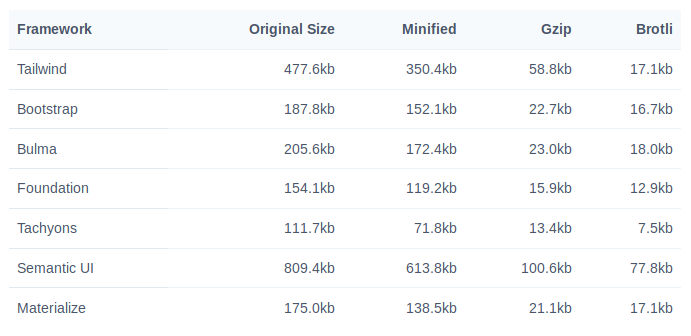

Ryan Durham
Senior Engineer @ Phylos
ryan at stagerightlabs dot com
This may sound crazy.
.profile {
display:flex;
flex-direction: column;
justify-content: space-between;
padding: 0.5rem;
margin: 1rem;
}

This is my bio!
.flex {
display:flex;
}
.flex-column {
flex-direction: column;
}
.justify-between {
justify-content: space-between;
}
.p-2 {
padding: 0.5rem;
}
.m-4 {
margin: 1rem;
}
This is my bio!
"Why not just use style attributes?"
This is my bio!
Using a palette of pre-defined classes forces you to stick within the parameters of your design system.
Style attributes are not compatible with media queries.
Style attributes are not compatible with
pseudo selectors.
1.
No time spent thinking of class names.
2.
Stylesheet file size does not increase when you
add more site structure.
3.
No need to worry about breaking things when
making changes down the road.
A set of pre-defined utility classes that are
100% customizable.
https://tailwindcss.com/docs/customizing-colors/#default-color-palette
https://tailwindcss.com/docs/customizing-spacing#default-spacing-scale
Tailwind is available through a CDN, however this will limit you to just the default styles.
This is not recommended as a best practice.
Instead, you should install it via NPM and
add it to your asset pipeline.
This will allow you complete control over
the CSS generated by Tailwind.
"A tool for transforming CSS with JavaScript"
(Similar to Compass for Ruby,
though not exactly the same...)
PostCSS takes a CSS file and provides an API to analyze and modify its rules (by transforming them into an Abstract Syntax Tree). This API can then be used by plugins to do a lot of useful things, e.g. to find errors or automatically insert vendor prefixes.
Autoprefixer
Add Tailwind to your asset pipeline:
https://tailwindcss.com/docs/installation#4-process-your-css-with-tailwind
// tailwind.config.js
module.exports = {
theme: {},
variants: {},
plugins: [],
}Tailwind is not susceptible to the "Bootstrap" effect.
What are the downsides?
#photography
#travel
#winter
.tag {
@apply inline-block bg-gray-200 rounded-full px-3 py-1 text-sm font-semibold text-gray-700;
}
#photography
#travel
#winter
Using only the default configuration, Tailwind CSS is 477kb un-minified and uncompressed.
Remove unused features via the config file.
Use PurgeCSS to remove unused styles at build time.
PurgeCSS is another PostCSS plugin that can be installed via NPM.
It scans your HTML and removes
unused classes from your CSS file.
Example: https://tailwindcss.com/docs/controlling-file-size/#setting-up-purgecss
Use compression.
You will probably end up using a combination of tactics to manage your production builds.
Try it. You will like it.
ryan at stagerightlabs dot com